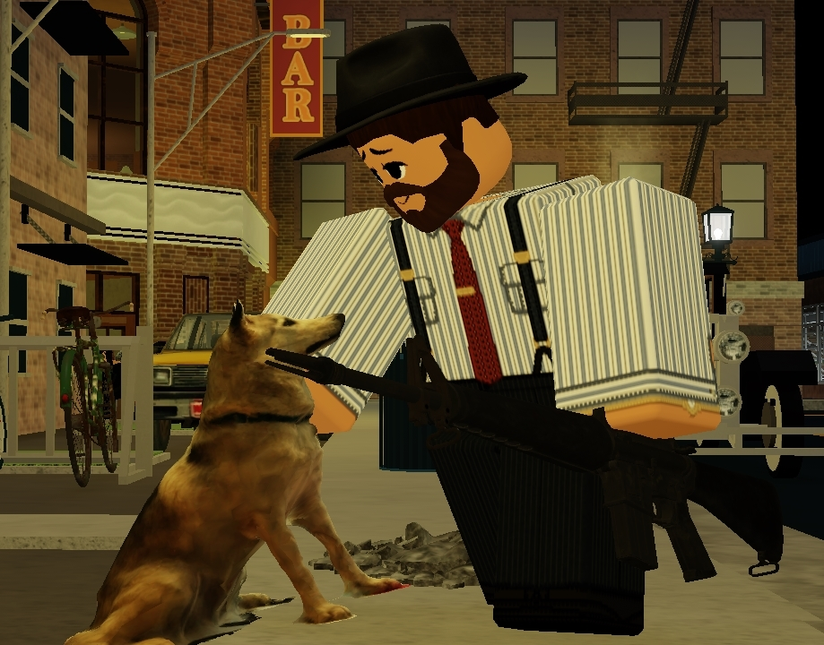

This was one of my first attempts to try my hand at making a Text adventure. To say the least for what it is I'm honestly really happy with it, it was a very enjoyable experience. Finally having the skill to actually build something I really wanted to do for people in this world. To Entertain through the medium of Gameplay and Storytelling. Even if I didn't achieve such a goal through this project, it was a step forward to what I will achieve by the time I'm old and grey. And here I'll show you, the vision.
When it came to the idea me and my partner came up when it came to this text adventure, we held a bit of a difference in it's vision, he wanted to just get the job done whiel I wanted to truely shoot for something ambitious and excelling, which ironically, was this projects most fatal flaw which I'll get into later. But! When it came to the story thesis, I always held a fascination with the way of thinking of a Career criminal as he goes through everyday life, simply treating it as a regular day to day job. With such a emotionally detetched protagonist, it was perfect for a very morally muddy and complicated text adventure where every choice you make in both open world and scripted events, have significant consequences.
Joseph Stoneheart when it came to my imagining of him, I always thought of a protagonist that worked within the career of being deceitful, crafty, and violent as a active benefit to the endeavor such as Organized Crime, he was obviously a person who should be capable of redemption, but also have obvious traits don't hint at, but are blatanantly evil. His background as an abuse victim, living in poverty, and eventually as a teen a fully engrossed criminal, he was the man that would be perfect for the user to project themselves on, or be completely detatched from him depending on their choices they picked for Joseph.
When it comes to such a overarching story and a protagonist who holds a great amount of history in organizaed crime you'll obviously be dealing with many relationships with unique characters, and the deciding factor for how you'll be treated, and how the protagonist will treat himself.